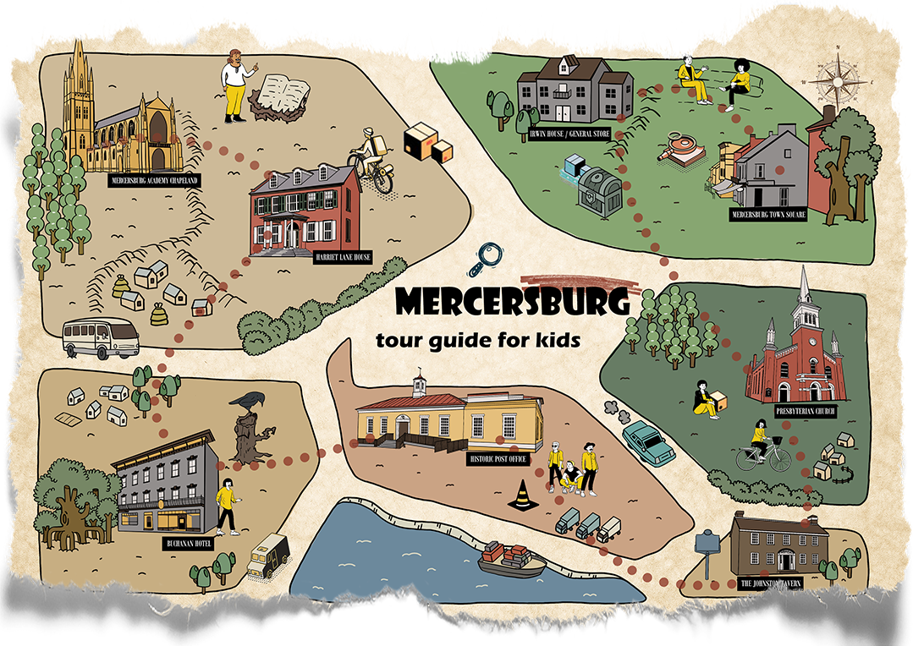

Word on the street.
Helping kids discover the history hiding in glaces the glive
Our Mission
We believe history isn't just found in textbooks or museums — it lives in our streets, buildings, and neighborhoods. Too often, local history is overlooked or never taught, especially to kids. When people don't know the stories of where they live, those stories can be lost. Through research, short-form storytelling, and guided activities, Word on the Street aims to make local history easier to access and understand. The project also encourages kids to look more closely at their surroundings and ask questions about where they live, helping them see that history isn't far away — it's right around them.